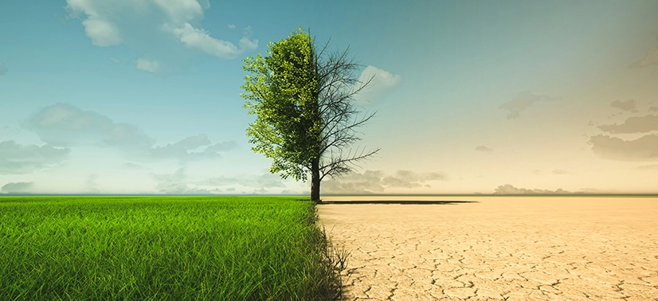
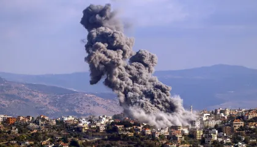

As mudanças climáticas têm um impacto direto no aumento do preço do café devido a uma série de fatores relacionados ao cultivo, à produção e à oferta dessa commodity. Aqui estão algumas das principais maneiras em que isso acontece: 1. Impacto nas safras e na produtividade: O aumento das temperaturas e as mudanças nos padrões de precipitação podem prejudicar as plantações de café. O café, especialmente o café arábica, é muito sensível a variações climáticas, como secas prolongadas, geadas e chuvas excessivas. Em muitas regiões produtoras de café, como Brasil e Colômbia, o clima tem se tornado mais instável, o que pode resultar em safras menores e de pior qualidade. 2. Aumento da frequência de eventos climáticos extremos: Secas: A falta de água afeta o crescimento das plantas e a produção de grãos. Em regiões onde a irrigação não é possível ou não é eficiente, a escassez de água pode devastar a produção. Geadas: O café é altamente sensível a baixas temperaturas. Geadas inesperadas, como as que ocorreram no Brasil em 2021, podem destruir grandes áreas de café, resultando em perdas significativas de produção. Ciclones e tempestades: Essas condições extremas também podem danificar as plantações, reduzir a qualidade do grão e, portanto, reduzir a oferta de café de qualidade superior. 3. Redução das áreas cultiváveis: Em algumas regiões, o aumento das temperaturas pode tornar o cultivo de café inviável em certas altitudes ou locais, forçando os produtores a migrar para outras áreas ou até mesmo abandonar a produção. Algumas áreas produtoras podem se tornar mais suscetíveis a pragas e doenças, o que também afeta a produtividade e a qualidade do café. 4. Aumento nos custos de produção: Com a necessidade de adaptação a novas condições climáticas, os produtores podem precisar investir mais em irrigação, sistemas de proteção contra geadas ou até mesmo mudanças no tipo de café que plantam. Esse aumento nos custos de produção pode ser repassado para o preço final do café. 5. Flutuação da oferta global: O café é uma commodity global, e se grandes produtores como o Brasil, que é o maior exportador mundial, enfrentarem uma colheita ruim devido a condições climáticas, a oferta mundial de café diminui, o que pode levar ao aumento dos preços. 6. Demanda crescente por café de alta qualidade: Mudanças climáticas podem resultar em uma maior demanda por cafés de alta qualidade que podem ser mais resilientes, mas com a produção limitada. Isso também pode causar um aumento nos preços, principalmente para cafés gourmet.
Mudanças Climáticas?
Guerras?
As guerras também têm uma relação direta com o aumento do preço do café, principalmente porque o café é uma commodity global que depende de uma cadeia de suprimentos complexa e de mercados internacionais. As guerras podem afetar a produção, o transporte e o comércio global de café de várias maneiras, impactando tanto a oferta quanto a demanda da bebida. Aqui estão algumas das formas como as guerras podem influenciar o preço do café: 1. Disrupção nas cadeias de suprimentos: Interrupção no transporte: A guerra pode afetar a infraestrutura de transporte (estradas, ferrovias, portos, aeroportos) em países produtores ou transitórios de café, tornando difícil ou impossível o transporte de grãos para os mercados internacionais. Aumento dos custos de transporte: O aumento do custo do transporte devido a questões como a insegurança nas rotas marítimas ou terrestres, aumento dos preços do combustível devido à escassez, e tarifas de seguros mais altas, pode elevar o custo final do café. 2. Escassez de mão de obra: As guerras muitas vezes causam migrações em massa e o deslocamento de populações, o que pode resultar em escassez de mão de obra nas áreas agrícolas. Isso pode afetar diretamente a produção de café, uma vez que a colheita do café requer trabalho intensivo. Além disso, em situações de guerra, muitas pessoas estão ocupadas em atividades relacionadas à guerra ou fugindo de áreas de conflito, o que pode resultar em uma diminuição significativa da força de trabalho disponível para a produção. 3. Aumento nos preços dos insumos: A guerra pode causar aumentos nos preços de insumos agrícolas, como fertilizantes, pesticidas e equipamentos, devido a interrupções no fornecimento ou ao aumento dos custos de produção. Esses aumentos podem ser repassados para os preços do café. Além disso, a guerra pode afetar o preço de commodities essenciais para a produção de café, como o petróleo, que é necessário para operar maquinários e para o transporte dos grãos. 4. Instabilidade política e econômica: A guerra pode causar instabilidade política e econômica em países produtores de café, o que pode afetar as políticas de exportação e aumentar a volatilidade no mercado. Por exemplo, países produtores podem limitar ou interromper as exportações de café como uma forma de proteger sua própria economia ou como resposta a sanções internacionais. O conflito pode gerar flutuações no câmbio das moedas, o que afeta diretamente os preços globais das commodities, incluindo o café. 5. Diminuição da oferta global: Se a guerra ocorre em uma grande região produtora de café, como no Brasil, na América Central ou em países africanos, pode haver uma redução significativa na produção de café devido a danos nas plantações, escassez de recursos ou a incapacidade dos agricultores de cultivar. Uma diminuição na oferta global de café tende a aumentar os preços, especialmente se a demanda continuar forte. 6. Redirecionamento do comércio global: Durante a guerra, alguns países podem redirecionar suas importações e exportações para parceiros considerados mais "seguros". Isso pode afetar a distribuição global de café, com alguns mercados se tornando mais dependentes de certos países produtores, o que pode pressionar os preços para cima. 7. Aumento da demanda em momentos de crise: Em períodos de guerra, especialmente em áreas afetadas diretamente pelo conflito, o consumo de café pode aumentar em alguns casos, como uma maneira de lidar com a tensão e a pressão emocional. Esse aumento da demanda também pode exercer pressão sobre os preços, principalmente se houver escassez de oferta. 8. Sanções e bloqueios comerciais: Em caso de guerra, sanções internacionais podem ser impostas a países produtores ou grandes exportadores de café, como forma de pressão política ou econômica. Isso pode afetar diretamente o fornecimento de café para o mercado global e aumentar os preços devido à redução das exportações ou ao aumento da incerteza no mercado. Exemplos históricos: Durante a Segunda Guerra Mundial, por exemplo, houve escassez de vários produtos alimentícios e commodities devido à interrupção nas cadeias de suprimentos globais, incluindo o café. No contexto recente, guerras em países produtores como a Síria e Somália afetaram a produção e exportação de várias commodities, incluindo café, o que resultou em aumentos de preços em algumas regiões.
Conclusão
Por enquanto, o preço do café vai continuar salgado. Como a produção dele não e algo tão facíl assim, demanda tempo e cuidados, se esses fatores continuarem a atrapalhar o cultivo e exportação dele, provavelmente em um futuro próximo, os preços vão continuar elevados como já estão, ou vão aumentar cada vez mais..."